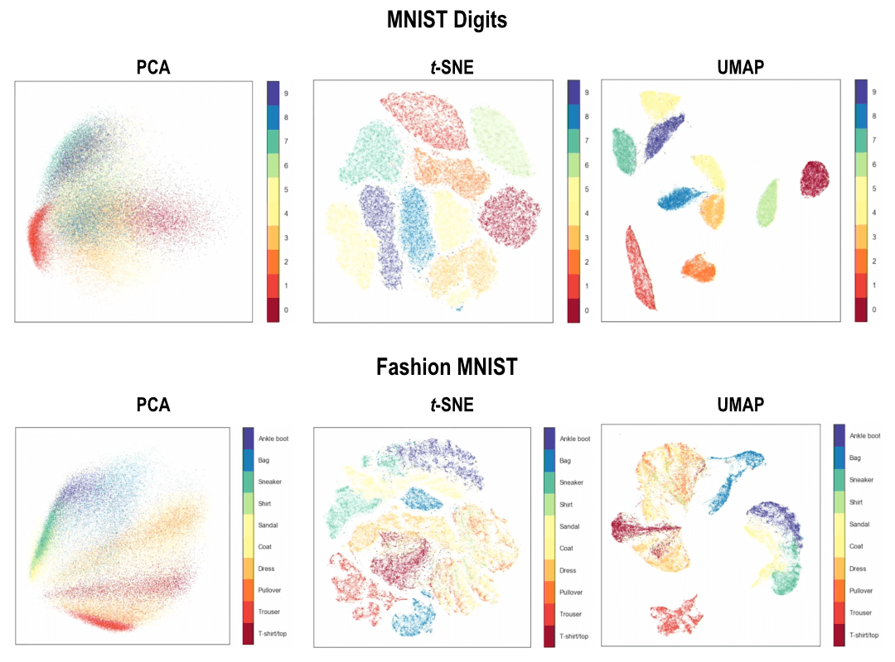

비선형 차원 축소 기법 비교
| 기법 |
유형 |
주요 특징 |
장점 |
단점 |
| t-SNE |
비선형 |
지역적 유사성 보존에 중점
(시각화 특화) |
복잡한 군집 구조 시각화에 탁월 |
계산 비용 높음,
전역적 구조 보존 미흡 |
| UMAP |
비선형 |
지역적 및 전역적 구조 보존 |
t-SNE보다 빠르고
전역적 구조 잘 보존 |
비교적 최신 기법,
이론적 기반이 복잡함 |

- 지역적 구조 보존: 데이터 포인트 간의 지역적 유사성을 저차원 공간에서도 최대한 보존
- 시각화 특화: 주로 고차원 데이터를 2D/3D로 시각화하는 데 탁월
- 군집 구조 표현: 복잡한 비선형 데이터의 군집 구조를 시각적으로 잘 표현
- 계산 비용: 데이터가 크면 학습 시간이 오래 걸림
- 결과물 해석: 군집 간 거리·크기는 절대적 의미가 아니므로 해석에 주의
- 지역적·전역적 구조 보존: 데이터의 지역적/전역적 구조를 모두 잘 유지
- 빠른 계산: t-SNE보다 훨씬 빠르며 대용량 데이터셋에 유리
- 전역 구조 해석: 데이터의 큰 구조를 더 잘 보존하여 전체 분포 이해에 도움
- 다목적 활용: 시각화뿐 아니라 전처리/클러스터링 등에도 효과적
- 이론적 복잡성: 비교적 최신 기법으로 이론이 다소 복잡